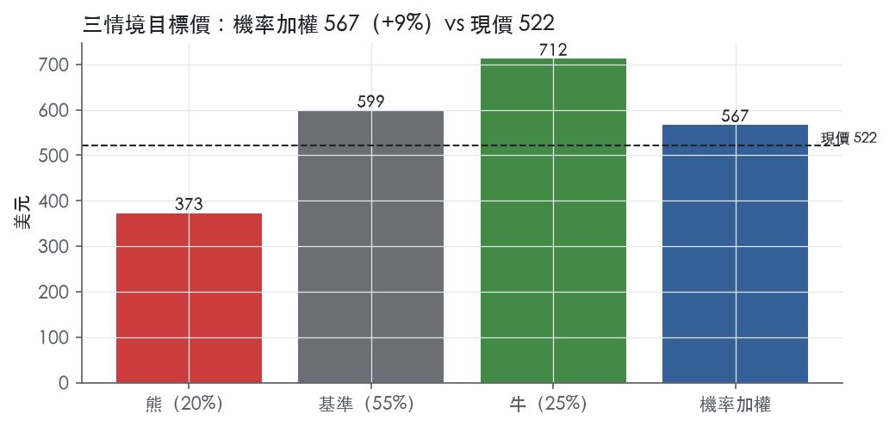
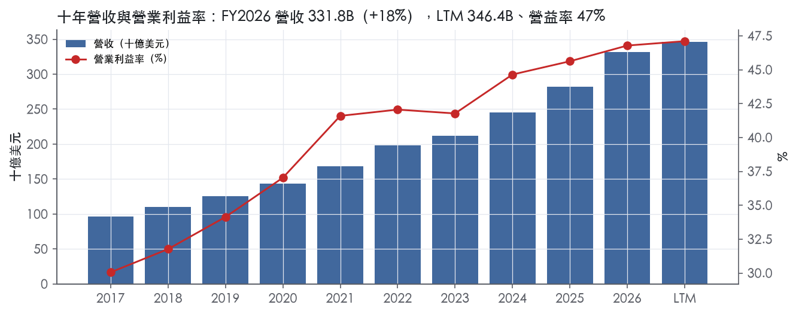
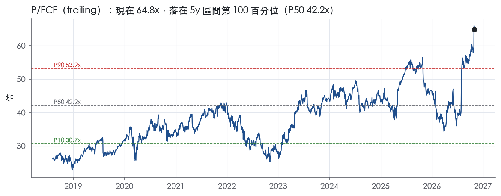
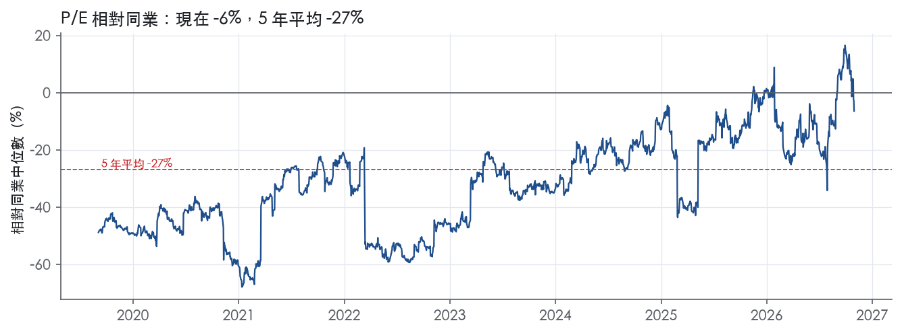
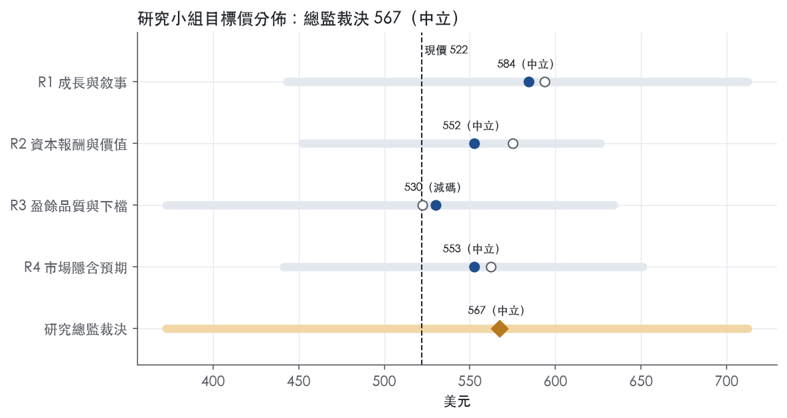
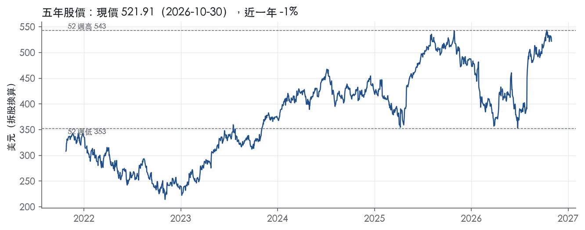

評等總表 › 資訊科技 › MSFT
乾淨倍數持平、成長上修，中性｜評等 中立｜目標價 567
| 報告日 | 評等 | 目標價 | 當時股價 | 超額報酬 |
|---|---|---|---|---|
| 2026-10-30 | 中立 | 567 | 522 | -0.6% |
| 2026-10-09 | 減碼 | 549 | 535 | -6.9% |
| 快評 | 動作 | 結論 |
|---|---|---|
| 2026-10-28 | 維持 | 營益率大幅高於預測，維持減碼 |
| 評等 | 中立 |
| 12 個月目標價 | 567 美元 |
| 現價 | 521.91 美元（2026-10-30） |
| 預期報酬 | 股價 +8.7%＋股息 0.7%＝總報酬 +9.4%；同業籃門檻 10.0%，超額 -0.6% |
| 估值方法 | P/E 29.0x，套在未來四季的EPS |
| 三情境 | 熊 373／基準 599／牛 712 |
| 研究流程 | 四位研究員兩輪辯論＋研究總監裁決 |
| 資料來源 | SEC EDGAR XBRL、Tiingo、FRED（全免費） |
乾淨倍數持平、成長上修，中性（研究總監裁決，四位研究員兩輪辯論後）
評等 中立｜12 個月目標價 567 美元（總監三情境機率加權 582 與研究員中位數 553 各半）｜現價 521.91（2026-10-30）
預期報酬：股價 +8.7%＋股息 0.7%＝總報酬 +9.4%。同業籃門檻 10.0%，超額 -0.6%。
估值方法：P/E 29.0x，套在未來四季的EPS。三情境：熊 373（20%）／基準 599（55%）／牛 712（25%）。
什麼會讓研究總監改變看法：FY2027Q2 Azure 跌破 40% 且 RPO 季減，倍數降到 26x、轉偏空；FY2028 資本支出指引顯示資本支出成長低於營收成長且 FY2027Q2 營益率不低於 47%，倍數移向 31–33x、轉偏多。
| 過去四季（實際，FY2027Q1） | 未來四季 | 第 5–8 季 | 第 9–12 季 | |
|---|---|---|---|---|
| 營收（B） | 346.4B | 405.3B | 458.0B | 499.3B |
| 營收成長 | 17.9% | 17.0% | 13.0% | 9.0% |
| 營業利益率 | 47.1% | 47.1% | 46.5% | 46.0% |
| EPS（美元） | 19.15 | 20.64 | 23.13 | 25.04 |
| EPS 成長 | 36.2% | 7.8% | 12.1% | 8.2% |
| 每股股息（美元） | 3.71 | 3.71 | 3.71 | 3.71 |
| P/E（現價） | 27.3x | 25.3x | 22.6x | 20.8x |
| 股息殖利率（現價） | 0.7% | 0.7% | 0.7% | 0.7% |
過去四季為申報數字；預測為研究總監的假設、程式計算。倍數與殖利率都用現價計算，用來看現價對應各期獲利的高低。
| 項目 | 上次（2026-10-13） | 這次（2026-10-31） | 變動 |
|---|---|---|---|
| 評等 | 減碼 | 中立 | 變動 |
| 機率加權目標價（美元） | 549 | 567 | +3.3% |
| 超額報酬 | -6.9% | -0.6% | +6.3 pp |
| 目標倍數 | 31x | 29x | — |
| 未來四季營收成長 | 16.0% | 17.0% | +1.0 pp |
| 未來四季營益率 | 45.5% | 47.1% | +1.6 pp |
| 未來四季 EPS（美元） | 18.98 | 20.64 | +8.8% |
| 熊／基準／牛機率 | 23／52／25 | 20／55／25 | — |
程式計算；「未來四季」各自從當次報告的資料起點算。研究總監逐點說明見第八章「與上次報告比較」。
| 情境 | 機率（歷史） | 故事 | 未來四季營收成長 | 第 5–8 季營益率 | 倍數 | 目標價 | 股價漲跌 |
|---|---|---|---|---|---|---|---|
| 熊 | 20%（17%） | 風險表第 1、2 條：Azure 跌破 35%、RPO 連兩季季減，租賃與採購承諾使資本密度升至 43%，利用率不足觸發 10-K Item 1A 減損，市場改用現金尺，價格落在 52 週低點附近 | 12.0% | 42.0% | 20.0x | 373 | -28.6% |
| 基準 | 55%（57%） | Azure 四成上下帶營收 17%，營益率守 LTM 後隨折舊緩降，市場對乾淨盈餘付的倍數不變 | 17.0% | 46.5% | 29.0x | 599 | 14.7% |
| 牛 | 25%（26%） | Azure 維持 40% 以上、FY2028 資本支出指引顯示資本支出成長低於營收成長，資本密度回到 FY2026 水準，市場回到接近但不超過 5 年 P50；對應本行上行路徑 | 20.0% | 48.0% | 33.0x | 712 | 36.5% |
目標價由程式依研究總監的驅動與倍數計算；機率由研究總監給定。括號內是歷史頻率：把這檔股票過去十年 12 個月報酬的波動形狀，置中在基準情境，結果落在各情境附近的比例。

四位研究員用不同方法各自估值，回應研究總監的質疑後交出第二輪，最後由總監逐點裁決。各研究員的主張見第七章，裁決理由見第八章，完整論證見《研究底稿》。
| 立場（一輪→二輪） | 加權目標價（一輪→二輪） | 評等（一輪→二輪） | 第二輪倍數 | 熊～牛目標價 | |
|---|---|---|---|---|---|
| R1 成長與敘事 | 看多→中性 | 594→584 | 中立→中立 | 29.0x | 443～712 |
| R2 資本報酬與價值 | 中性→中性 | 575→552 | 中立→中立 | 22.0x | 452～626 |
| R3 盈餘品質與下檔 | 中性→看空 | 522→530 | 減碼→減碼 | 26.0x | 373～634 |
| R4 市場隱含預期 | 中性→中性 | 562→553 | 中立→中立 | 27.0x | 441～651 |
| 研究總監裁決 | 中性 | 567 | 中立 | 29.0x | 373～712 |
目標價由程式依各自的驅動與倍數計算；評等＝機率加權總報酬 − 同業籃門檻。
Microsoft 是一家以 AI 與雲端為核心引擎、橫跨生產力軟體、基礎設施雲端與個人裝置三大戰場的科技巨頭。公司使命是「賦能地球上每一個人與每一個組織實現更多」，核心業務是開發並支援涵蓋 AI、雲端運算、生產力協作與個人運算的軟體、服務、裝置與解決方案組合¹。公司提供以雲端為基礎的 AI、軟體、平台與內容服務，並提供解決方案支援與顧問服務，同時也對全球受眾投放線上廣告¹。產品線包含作業系統、伺服器應用程式、商業解決方案應用程式、軟體開發工具、桌面與伺服器管理工具及電玩遊戲，也設計銷售 PC、平板、遊戲主機與其他智慧裝置¹。客群從大型跨國企業、公部門到中小企業，再到一般消費者與開發者，涵蓋全球每一個國家與社群¹。FY2026 全年營收 331.84B 美元，年增 17.8%，LTM 營收已達 346.44B 美元，顯示成長曲線仍在加速。
截至 FY2026 10-K，公司以三個報告分部管理財務表現：Productivity and Business Processes、Intelligent Cloud、More Personal Computing¹。Productivity and Business Processes 主要包含 Microsoft 365 商用雲端與授權、Microsoft 365 消費版、LinkedIn 與 Dynamics 365，FY2026Q4 該分部營收 37.847B 美元、年增 14%²。Intelligent Cloud 主要是 Azure 與其他雲端服務、GitHub、伺服器產品與企業合作夥伴服務，FY2026Q4 營收 39.306B 美元、年增 32%（以固定匯率計算年增 31%），其中 Azure and other cloud services 營收成長 43%²。More Personal Computing 涵蓋 Windows OEM 授權、Surface 裝置、XBOX 內容與服務，以及 Search 廣告業務，FY2026Q4 營收 12.854B 美元、年減 4%（固定匯率年減 5%）²。值得留意的是，公司已在 2026 年 9 月宣布自 FY2027 起變更分部結構，新架構把三分部重組為「Agents and Infra」與「Devices and Consumer」兩大類，FY2027Q1 新聞稿已採用新分類並回溯調整前期比較數字³。FY2027Q1，Agents and Infra 營收 76.795B 美元、年增 25%，Devices and Consumer 營收 15.484B 美元、年減 3%³。這個分部重組把 Microsoft 365 商用雲、Azure、LinkedIn 等高成長雲端/AI 業務全部併入 Agents and Infra，等於把公司敘事從「三引擎」簡化成「AI 基礎設施＋消費端」兩大引擎，對市場解讀 Azure 占比會更直觀。10-K 未揭露各分部占總營收的具體百分比，僅提供絕對金額。
公司透過直接與間接雙軌通路銷售，直接銷售服務大型跨國企業與公部門客戶，也服務中小企業；間接銷售則透過全球合作夥伴網路支援產品的銷售、部署與管理¹。OEM 廠商在裝置上授權並預先安裝 Microsoft 軟體，部分產品服務也透過線上購買管道與數位市集提供¹。公司提供多種數量採購方案，依企業規模、教育機構與政府單位量身打造彈性的購買、部署與管理選項¹。地區與客戶集中度方面，10-K 未在 Item 1 提供進一步量化拆分，細節應留待 Item 7 MD&A 與財報附註。FY2027Q1 新聞稿揭露 Commercial remaining performance obligation（商業未履約合約餘額）高達 677B 美元、年增 73%，反映企業客戶對多年期雲端與 AI 合約的大規模鎖定³。
過去四季，Microsoft 的雲端與 AI 需求持續推升營收年增率，且近兩季出現顯著加速。FY2026Q2（2025年12月止），公司淨利從上季跳升至 38.46B 美元、EPS 5.16，但自由現金流降至 5.88B 美元，資本支出壓力明顯浮現。FY2026Q3，營收 82.89B 美元、年增 18.3%，營益率回落至 46.3%。FY2026Q4（全年收官季），營收 90.007B 美元、年增 18%（固定匯率 17%），營業利益 40.603B 美元、年增 18%，GAAP 淨利 35.766B 美元、年增 31%，GAAP EPS 4.81 美元、年增 32%²；當季受惠 Anthropic 投資 3.2B 美元收益及資遣費用低於預期等一次性項目，合計貢獻每股 0.27 美元的效益，同期 XBOX 認列遣散與減損費用部分抵銷²；Microsoft Cloud 營收 59.3B 美元、年增 27%，Azure 全年營收首次突破 100B 美元，Microsoft 365 Copilot 付費席位超過 3,000 萬²。FY2026 全年營收 331.839B 美元、年增 18%（固定匯率 16%），GAAP 淨利 133.749B 美元、年增 31%，GAAP EPS 17.95 美元、年增 32%²。FY2027Q1（最新一季，2026年9月止），營收 92.279B 美元、年增 19%，營業利益 45.915B 美元、年增 21%（固定匯率 22%），GAAP 淨利 36.629B 美元、年增 32%，GAAP EPS 4.92 美元、年增 32%³；Microsoft Cloud 營收 63.9B 美元、年增 30%（固定匯率 31%），Azure 營收年增 48%，CFO Amy Hood 表示「我們迎來本財年強勁開局…成果全面超出預期」³。公司當季未提供下一季具體財測，僅表示將於法說會上說明前瞻指引³。整體看，EBITDA 與淨利成長速度持續領先營收，顯示 AI 相關雲端業務的規模經濟正在兌現，但自由現金流因資本支出擴張而波動，FY2026 全年 FCF 僅 66.99B 美元、較 FY2025 的 71.61B 美元下滑。
公司將研發聚焦三個互相連動的目標：重塑生產力與商業流程、打造智慧雲端與智慧邊緣平台、創造更個人化的運算體驗¹。公司明確表示未來投資重點包括用端到端整合方案全面處理安全議題、以 Microsoft 365 Copilot 與 agents 將 AI 與情境智慧應用在工作流程、透過 Azure AI Foundry 提供統一的企業 AI 智慧層，以及利用 Windows 帶動雲端業務成長與 Edge、Bing、Copilot、Teams、XBOX Game Pass 等服務的使用黏著度¹。CEO Satya Nadella 在 FY2027Q1 法說中強調「我們正在幫助企業建立並擁有自己的智慧，並透過代理人安全與信任的建立，把創新轉化為成長中的採用與實際影響」³；在 FY2026Q4 法說中他則指出「我們正在推進成本到產出曲線的前沿，確保每個客戶都能把 token 轉化為商業成果」，並點名 Azure 全年破百億美元與 Copilot 付費席位破 3,000 萬作為證據²。公司也坦言，未來成長取決於能否超越現有產品類別定義、商業模式與銷售動線的限制¹。從投資人角度看，Azure 持續的加速成長（48%）與 677B 美元的未履約合約餘額是目前最具說服力的前瞻指標，遠比 Windows OEM 與裝置業務的持續衰退（-22%）更能代表公司未來三年的營收結構。分部重組為 Agents and Infra／Devices and Consumer 兩類，實質上是把 AI 雲端基建業務從傳統生產力軟體敘事中拆出來獨立估值，值得在後續本益比／EV 倍數分析時對應調整可比公司組合。自由現金流受資本支出壓縮的趨勢若持續，對高本益比估值的支撐力將趨弱，是後續需要緊盯的財務訊號。

Microsoft 的經濟護城河評為寬，趨勢穩定。護城河由三層構成：企業軟體的轉換成本、雲端的規模經濟、部分平台的網路效應。在這三層之上，我們有把握未來 10 年以上 ROIC 仍高於資本成本。主要但書是 AI 資本支出正在壓縮 ROIC 高於資本成本的幅度。這代表安全邊際變薄，不代表競爭地位退化，所以趨勢給「穩定」，不給「變寬」。
轉換成本是最主要的來源。原文指出，Microsoft 365 Commercial 營收主要由既有安裝基礎成長與每用戶平均營收擴張帶動，並持續由 Office 本地授權轉向 Microsoft 365¹。公司在 Office 上的競爭手段，是讓產品與客戶既有的本地或雲端技術良好協作¹。Azure 的競爭優勢包括混合雲，讓客戶把既有資料中心與公有雲部署成單一整合的基礎架構¹。Dynamics 營收由授權用戶數、應用使用量與每用戶平均營收擴張驅動¹。四段描述的共同點是：營收建立在客戶已部署的身分、資料與工作流程上。客戶若要換供應商，必須同時重建多層系統，這正是轉換成本。
成本優勢是第二來源，來自規模經濟。公司明言雲端業務受惠三種規模經濟¹：
AI 硬體方面，公司同時採用自研晶片與晶片廠夥伴關係¹。
網路效應是第三來源，但只集中在部分業務。LinkedIn 連結全球專業人士，營收受會員參與度驅動¹。XBOX 一端為用戶提供認證應用與服務網路，另一端讓開發者觸及龐大客群¹。Windows 以相容廣泛的硬體與軟體作為競爭基礎¹。
無形資產只列為輔助來源。公司在全球執行著作權、專利、商標與營業秘密保護，並對外授權特定專利技術¹。不過公司也表示，其研發與產品開發不實質依賴任何單一第三方授權¹。因此專利本身不是超額報酬的主因，生態系才是。
利潤率完全支持寬評級，ROIC 的趨勢則與「穩定」有衝突，需要拆開解釋。
支持的證據
衝突的證據
為何仍維持寬評級
需要追蹤的訊號 毛利率由 FY2024 的 69.8% 降至 FY2026 的 67.9%，FY2027Q1 為 67.8%。這反映 AI 基礎設施組合對毛利的輕度壓力，幅度仍在十年區間內。
最大威脅是 AI 改寫應用層、繞過既有的轉換成本；其次是資本密集化吃掉超額報酬。
下修觸發點：營益率跌回十年平均 39.5% 以下，且 ROIC 持續下滑。兩個條件同時出現時，代表定價權而不只是資本基礎出了問題，評級應下修為窄。
目標倍數相對同業應給溢價：寬護城河加上十年最高的營益率，支撐盈餘的持續性高於同業。溢價幅度不宜回到自身 5 年 P/E 中位數 33.6x，因為 ROIC 高於資本成本的幅度正在收窄；現在的 27.3x 位於 5 年 20.6% 分位。P/FCF 64.8x 位於 5 年 99.8% 分位；在資本支出高峰期，FCF 倍數會失真，建議以 EV/EBITA 或 P/E 作為主要估值錨。
| 指標 | 最新 | 十年平均 | 標準差 | 最低 | 最高 |
|---|---|---|---|---|---|
| ROIC | 35.9% | 67.4% | 32.6% | 23.8% | 117.1% |
| 毛利率 | 67.9% | 67.6% | 1.7% | 64.5% | 69.8% |
| 營業利益率 | 46.8% | 39.5% | 5.6% | 30.1% | 46.8% |
| FCF 利潤率 | 20.2% | 29.4% | 3.8% | 20.2% | 33.4% |
| ROE | 34.0% | 37.7% | 8.0% | 19.4% | 47.2% |
程式計算。資本成本代理值（10 年債＋5%）：10.0%；ROIC 平均減資本成本：57.5%；ROIC 有資料的 9 年中，高於資本成本 9 年。
營業現金流／淨利 LTM 1.37x、近三年均值 1.35x、十年均值 1.46x，全部維持綠燈，顯示淨利有紮實的現金支撐。應計比率 LTM 為 -6.9%，近三年 -6.6%，十年 -6.0%，持續為負值代表盈餘並非靠應計項目堆出來，是正面訊號。但自由現金流／淨利 LTM 只剩 0.42x，近三年均值 0.68x，均低於 0.60x 的紅燈門檻，十年均值則有 0.99x，落差主因是資本支出／營收從 FY2017 的 8.4% 一路爬升到 FY2026 的 34.9%。MD&A 明確說「我們在雲端與 AI 基礎設施上的投資將持續提高我們的營運成本」，且本期資本支出新增 51.4 billion 美元⁴。換言之，CFO 沒有說謊，但自由現金流被拿去蓋資料中心，這是結構性的資本密集度上升，不是盈餘品質造假。
公司非 GAAP 調整項只有一個：排除 OpenAI 投資的淨損益⁴。FY2026 GAAP 淨利 133,749M 美元，非 GAAP 調整後淨利 128,786M 美元，差異來自 OpenAI 投資淨收益對淨利與每股盈餘的正向貢獻（稀釋 EPS 增加 0.67 美元）⁴；FY2025 則是反方向，OpenAI 投資淨損失讓淨利與 EPS 分別減少 3.6 billion 美元與 0.49 美元⁴。最新一季（FY2027Q1）GAAP 淨利 36,629M 美元，非 GAAP 調整後為 36,422M 美元，差異僅 207M 美元，波動已明顯收斂³。這項調整我判斷是合理的，因為 OpenAI 權益法投資的公允價值與重組利得本質上是非經營性、波動性高的一次性項目，FY2026 的 6.5 billion 美元淨利得主要來自 OpenAI 重組的稀釋利得，與核心雲端與軟體業務無關⁴。值得注意的是，MD&A 另外提到 XBOX 業務的「減損及相關費用」計入了 GAAP 研發與營業費用中，這是真實但一次性的成本，且公司並未在非 GAAP 中加回，屬於偏保守的做法⁴。
槓桿極低，淨負債／EBITDA LTM -0.14x，近三年 -0.23x，十年 -0.42x，全為淨現金狀態；利息保障倍數 LTM 50.6x 遠高於綠燈門檻，財務彈性沒有限制估值倍數的空間。股權稀釋方面，稀釋股數年變動 LTM -0.1%，十年均值 -0.5%，持續透過回購淨減少股數。FY2026 回購 36 million 股，花費 16.7 billion 美元，較 FY2025 的 31 million 股、13.0 billion 美元增加，60 billion 美元回購計畫還剩 40.6 billion 美元額度⁴；股利宣告金額 FY2026 為 27.0 billion 美元，FY2025 為 24.7 billion 美元⁴。（股利＋回購）／淨利 LTM 僅 33.7%，近三年 40.8%，均低於十年均值 72.7% 的黃燈區間，顯示股東回饋占淨利比例正在被淨利高速成長稀釋，而非縮手。資產負債表外，公司揭露經營與融資租賃（含推算利息）合計承諾達 443,506M 美元，加上採購承諾 194,060M 美元，多數指向資料中心與 AI 基礎設施⁴，這部分不計入淨負債，但長期現金流出壓力真實存在。另外 IRS 對 2004–2013 年度轉讓定價問題要求補稅 28.9 billion 美元加罰款利息，屬於尚未解決的或有負債，公司表示會積極抗辯⁴。
自由現金流／淨利紅燈（LTM 0.42x，近三年均值 0.68x）：真實但可解釋，資本支出／營收已由 FY2025 的 22.9% 跳升至 FY2026 的 34.9%，MD&A 明言持續投資 AI 基礎設施會壓縮營業利潤率與現金留存⁴；這是公司主動選擇的資本密集度上升，不是現金被盈餘美化掉的訊號，但估值若用傳統 FCF 法要正視這個結構性變化。
存貨成長快於營收 31.1 個百分點（FY2026）：部分可解釋但證據不完整。10-K 現金流量說明中提到投資活動現金流增加 66.9 billion 美元，其中「22.2 billion 美元增加用於其他投資活動，主要為了促成零組件採購」⁴，我判斷這與 AI 伺服器/GPU 等零組件的提前囤貨有關，屬於供應鏈備貨而非銷售滯銷，但原文沒有直接點名「存貨」科目增加的原因，這個解釋是推論而非逐字對應，估值研究員應保留一定保留態度。
淨利率 FY2017→FY2018 下滑 11pp、FY2018→FY2019 回升 16pp：屬於歷史一次性事件，不影響當期盈餘品質判斷，但本資料包提供的 10-K（FY2026 申報）只比較 FY2026 對 FY2025，沒有收錄 FY2018/FY2019 當年度 MD&A 原文可供引用佐證，我只能依量化底稿的方向判斷這兩年波動屬於久遠的稀釋期一次性稅務相關因子，與近年盈餘品質無關。估值研究員若要精確歸因，需另外調閱 FY2019 10-K。
估值應以 GAAP 淨利為主軸，但扣除 OpenAI 投資公允價值損益這類非經營性波動項目——這部分公司自己已經在非 GAAP 中剔除，且近期波動已大幅收斂（LTM 僅 207M 美元差異）³。盈餘本身現金含量高（CFO/淨利穩定 >1.3x），不需要對 GAAP 淨利打品質折扣，但自由現金流被 AI 資本支出大幅壓縮，意味著用 FCF 殖利率（目前 1.5%，px 資料）做估值時要接受結構性偏低，不宜線性外推過去十年的 FCF/淨利轉換率。槓桿接近淨現金、利息保障極高，不構成限制倍數的理由，目前 EV/EBITDA 18.7x 落在五年分位 — 的區間（band 資料）屬合理區間，但 P/FCF 64.8x 已逼近五年 99.8% 高分位，顯示市場已經在為「AI 支出終將轉換成現金流」的敘事提前買單，風險在敘事而非盈餘造假。
| 項目 | LTM | 近三年 | 十年 | 燈號 | 規則 |
|---|---|---|---|---|---|
| 營業現金流／淨利 | 1.37x | 1.35x | 1.46x | 綠 | ≥1.00x 綠、<0.80x 紅 |
| 自由現金流／淨利 | 0.42x | 0.68x | 0.99x | 紅 | ≥0.90x 綠、<0.60x 紅 |
| 應計比率（(淨利−CFO)／平均總資產） | -6.9% | -6.6% | -6.0% | 綠 | ≤0.0% 綠、>5.0% 紅 |
| SBC／營收 | 3.6% | 4.1% | 3.9% | 黃 | ≤3.0% 綠、>8.0% 紅 |
| 淨負債／EBITDA | -0.14x | -0.23x | -0.42x | 綠 | ≤1.50x 綠、>3.00x 紅 |
| 利息保障倍數（營業利益／利息） | 50.6x | 47.4x | 32.0x | 綠 | ≥8.00x 綠、<3.00x 紅 |
| 稀釋股數年變動 | -0.1% | -0.1% | -0.5% | 綠 | ≤0.0% 綠、>3.0% 紅 |
| （股利＋回購）／淨利 | 33.7% | 40.8% | 72.7% | 黃 | ≥50.0% 綠、<0.0% 紅 |
| 應收帳款成長 − 營收成長（FY2026） | -2.1pp | — | — | 綠 | ≤5pp 綠、>15pp 紅 |
| 存貨成長 − 營收成長（FY2026） | +31.1pp | — | — | 紅 | ≤5pp 綠、>15pp 紅 |
程式計算；燈號以 LTM（無則近三年平均）判定。
| 風險 | 觸發指標（看什麼數字、在哪裡看） | 對 EPS 的影響方向與粗略幅度 | 未來 12 個月發生機率 | 出處 |
|---|---|---|---|---|
| AI／雲端資本支出報酬不如預期 | 資本支出/營收（量化底稿：FY2026 已達 34.9%，較 FY2025 的 22.9% 大幅跳升）；FCF 年度數字（FY2026 FCF 66.99B，低於 FY2025 的 71.61B） | 負向，中～大：資本支出持續墊高但 Azure 消耗若不跟上，FCF 殖利率（現為 1.5%）會進一步下滑 | 中 | ⁵＋量化底稿 |
| Azure／AI 需求成長放緩或客戶轉向競爭平台 | Azure 營收年增率（FY2027Q1 為 48%）、Commercial RPO 年增率（73%，677B） | 負向，大：Azure 是目前成長最快的業務，一旦增速從 48% 明顯回落，整體營收成長模型會被重新定價 | 中 | 8-K 財報新聞稿（2026-10-28） |
| 競爭與平台生態系（AI 模型、雲端、開源）侵蝕定價與毛利 | 毛利率趨勢（FY2026 為 67.9%，較 FY2024 69.8% 已下滑）；AI 定價與推論成本揭露 | 負向，中：公司明言若 AI 產品定價因競爭、商品化而下降，毛利與財務表現會受影響⁵ | 中 | 10-K 年報 FY2026 Item 1A（風險因素） |
| 電力／基礎設施供給瓶頸限制資料中心擴張 | 資本支出金額與資料中心擴建公告；能源取得相關訴訟或法規限制公告 | 負向，中：若無法取得電力與零組件，將限制產能、延遲收入實現⁵ | 中 | 10-K 年報 FY2026 Item 1A（風險因素） |
| 反壟斷／AI 監管（EU AI Act、競爭法執法）與稅務爭議 | 監管裁罰或禁令公告；IRS NOPA 爭議進展（IRS 要求補稅 28.9B 美元加罰款利息） | 負向，中：若 IRS 爭議或反壟斷裁罰落地，直接認列費用或罰款衝擊淨利⁵ | 低 | 10-K 年報 FY2026 Item 1A（風險因素） |
AI／雲端資本支出報酬不如預期是目前最大的財務風險。公司明確表示「這些投資規模龐大且節奏加速，需要大量且持續增加的資本支出，且領先於完全發展的收入來源」，相關收益「可能無法在預期時間或預期水準實現」⁵。資本支出/營收比率已從 FY2025 的 22.9% 跳升至 FY2026 的 34.9%，而同期 FCF 從 71.61B 降至 66.99B，兩個數字同時變化方向相反，說明資本密度提高已經開始壓縮現金轉換。若需求確認速度落後於建置速度，公司自己也承認「資本投資的高估或產能配置錯配，可能導致基礎設施利用率不足並導致資產減損」⁵，這是直接衝擊 EBITDA 與 EPS 的路徑，應緊盯每季資本支出/營收與 FCF 殖利率。
Azure 成長率是整份財報最被市場盯緊的單一數字。FY2027Q1 Azure 營收年增 48%，較 FY2026Q4 的 43% 進一步加速，Commercial RPO 年增 73% 至 677B 美元³。但公司在風險章也承認「客戶可能減少、延遲或將 AI 工作負載轉移至競爭平台、地端部署或其他替代方案」⁵，且「若 AI 服務採用速度低於預期，我們可能無法實現投資的預期回報」⁵。目前股價隱含的高成長預期（P/FCF 處於 5 年 99.8% 分位）對任何 Azure 增速回落都會高度敏感，這是最值得每季追蹤的單一指標。
競爭與開源／價格戰壓縮毛利排在第三，因為公司列出的競爭對手橫跨超大規模雲端業者、開源模型與垂直整合硬體廠，且「若 AI 產品與服務的定價因競爭、商品化或其他市場力量而下降，我們的利潤率、財務狀況及經營成果可能受到不利影響」⁵。毛利率已從 FY2024 的 69.8% 降至 FY2026 的 67.9%，方向與公司揭露的風險一致，但目前幅度屬中等，尚未失控。
電力與基礎設施供給瓶頸是結構性、非週期性的風險。公司直言「電力供應的可用性、可靠性與成本對資料中心運營與擴張至關重要」，且「若無法在商業合理條件下取得足夠電力資源，我們支援客戶需求與執行成長策略的能力可能受到不利影響」⁵。此風險不會立刻反映在單季財報，但會透過資本支出延遲或資料中心利用率間接影響未來幾年的營收確認節奏。
監管與稅務爭議機率較低但尾部風險存在。公司揭露 IRS 就 2004-2013 年度跨國移轉定價問題要求補稅 28.9 billion 美元加罰款利息⁵，雖然金額龐大，但爭議期程長、實際認列時點不確定，加上 EU AI Act 等監管成本屬於持續性而非一次性衝擊，故排在五條風險最後。
現價 521.91 對應 trailing（過去四季）P/E 27.3x、EV/EBITDA 18.7x、EV/EBITA 23.0x、EV/Sales 11.1x、FCF 殖利率 1.5%。主要估值倍數 P/FCF 現在 64.8x，落在5 年區間第 100 百分位（P10／P50／P90 = 30.7x／42.2x／53.2x）。

把程式的機械基準預測放到現價下，市場付的前瞻倍數是：P/FCF（未來四季） 67.4x、P/E（未來四季） 26.0x、P/FCF（第 5–8 季） 60.8x、P/E（第 5–8 季） 23.5x。反推 DCF 顯示市價隱含未來五年營收年成長 35.0%（WACC 9.0%、終值成長 3.0%、FCF 利潤率 11.6%，SBC 不加回）。
| 倍數 | 現在 | 5 年 P10 | 5 年 P50 | 5 年 P90 | 現在分位 | 全期 P50 |
|---|---|---|---|---|---|---|
| P/E | 27.3x | 25.1x | 33.6x | 37.8x | 20.6% | 33.6x |
| EV/EBITDA | 18.7x | — | — | — | — | 19.0x |
| EV/EBITA | 23.0x | 20.0x | 25.9x | 29.6x | 27.3% | 25.5x |
| EV/EBIT | 23.6x | 20.7x | 26.8x | 30.7x | 26.2% | 26.0x |
| EV/Sales | 11.1x | 9.0x | 11.7x | 13.6x | 40.1% | 10.7x |
| P/S | 11.2x | 9.2x | 11.9x | 13.8x | 37.0% | 11.0x |
| P/FCF | 64.8x | 30.7x | 42.2x | 53.2x | 99.8% | 37.8x |
trailing 倍數（股價 ÷ 過去四季）；分位以每個交易日計算。
同業籃：ADBE, ADSK, TEAM, ACIW, BSY, BILL（SIC 7372 同業 38 家中，CY2025 營收最接近的 6 家）。評等門檻 10.0%：同業「倍數不變下持有一年」的隱含報酬中位數（＝ FCF 殖利率 ×(1＋g)＋g，g 為 5 年營收年複合成長並夾在 −2%～8%），每家夾在 0～15%、P/E 低於 5 倍視為資料可疑而排除，中位數再限制在 10 年債到 10 年債＋5% 之間（同業原始中位數 13.0%）。
| 代號 | 市值 | 5 年營收 CAGR | 營益率 | ROIC | P/E | 5 年 P/E 中位數 | EV/EBITDA | P/FCF | 隱含報酬 |
|---|---|---|---|---|---|---|---|---|---|
| MSFT | 3,876.2B | 14.6% | 47.1% | 35.9% | 27.3x | 33.6x | 18.7x | 64.7x | 9.7% |
| ADBE | 97.8B | 13.1% | 35.7% | 111.5% | 14.0x | 37.2x | 9.3x | 9.2x | 19.7% |
| ADSK | 52.7B | 13.7% | 26.2% | 149.2% | 32.3x | 55.2x | 22.3x | 18.6x | 13.8% |
| TEAM | 49.9B | 25.8% | 0.2% | 6.6% | — | — | 328.6x | 37.8x | 10.9% |
| ACIW | 5.7B | 6.3% | 18.6% | 11.4% | 25.9x | 25.2x | 14.6x | 18.3x | 12.1% |
| BSY | 13.0B | 13.4% | 23.6% | 12.3% | 45.1x | 65.2x | 32.5x | 26.2x | 12.1% |
| BILL | 4.4B | 47.3% | -4.4% | -2.1% | — | — | — | 10.8x | 18.0% |
| 同業中位數 | 13.5% | 21.1% | 11.8% | 29.1x | 46.2x | 22.3x | 18.4x | 10.0% |
全部 trailing，程式以各公司 SEC XBRL 與 Tiingo 行情計算；第一列為本檔。
P/E 相對同業中位數：現在 -6.4%，過去 1 年平均 -8.5%、3 年 -17.7%、5 年 -26.9%；EV/EBITDA 相對同業中位數：現在 -16.0%，過去 1 年平均 -12.6%、3 年 —、5 年 —。

事後實現前瞻倍數帶（P/FCF，2018-11-19..2025-11-17）：P10／P50／P90 = 22.0x／32.7x／45.1x。它是每個交易日的股價除以之後四季實際實現的指標；一年後，今天的第 5–8 季正是那時的未來四季，所以這條帶是 12 個月目標價的同口徑倍數。因為用的是事後實際而非當時預期，過去成長超乎預期的公司這條帶會偏低。
程式的機械基準（成長率從過去四季年增率三年收斂到 6%、利潤率持平）用 事後實現前瞻 P/FCF P50 估值得到 280（-46.3%），市場現行前瞻倍數（現價 ÷ 基準 未來四季指標）一年後持平，套在基準 第 5–8 季指標得到 579。這兩個數字只是參考點，不是本報告的目標價；研究員對這個定價的回應在第七章。
下表是每位研究員第一輪（各自獨立）與第二輪（回應研究總監的質疑後）的結果。目標價全由程式依各自的假設計算。
| 立場（一輪→二輪） | 加權目標價（一輪→二輪） | 評等（一輪→二輪） | 第二輪倍數 | 熊～牛目標價 | |
|---|---|---|---|---|---|
| R1 成長與敘事 | 看多→中性 | 594→584 | 中立→中立 | 29.0x | 443～712 |
| R2 資本報酬與價值 | 中性→中性 | 575→552 | 中立→中立 | 22.0x | 452～626 |
| R3 盈餘品質與下檔 | 中性→看空 | 522→530 | 減碼→減碼 | 26.0x | 373～634 |
| R4 市場隱含預期 | 中性→中性 | 562→553 | 中立→中立 | 27.0x | 441～651 |
| 研究總監裁決 | 中性 | 567 | 中立 | 29.0x | 373～712 |
目標價由程式依各自的驅動與倍數計算；評等＝機率加權總報酬 − 同業籃門檻。
分歧度：第一輪 加權目標價 522～594（區間＝現價的 14%）· 倍數 22～50x · 立場 看多×1、中性×3；第二輪 加權目標價 530～584（區間＝現價的 10%）· 倍數 22～29x · 立場 中性×3、看空×1。

| 研究員 | 第二輪主張 | 堅持的理由 |
|---|---|---|
| R1 成長與敘事 | 中性，29x P/E，營收成長 17%，倍數等於乾淨盈餘的現行水準。 | 熊情境機率高於牛，因為合約承諾與客戶集中會放大下行。 |
| R2 資本報酬與價值 | 中性，22x 企業價值倍數，低於現行 23.0x。 | 租賃與採購承諾鎖定未來折舊，倍數必須低於現行水準。 |
| R3 盈餘品質與下檔 | 減碼，26x P/E，接近過去五年市場付的下緣 25.1x。 | 盈餘是真的，但報酬追不上同業門檻，持有的機會成本太高。 |
| R4 市場隱含預期 | 中性，27x P/E，略低於現行 27.3x。 | 市場低估成長能撐多久，第二年營收成長仍有 14%。 |
每位研究員的逐條回應與完整論證見《研究底稿》（MSFT_研究底稿_2026-10-31.docx）。
| 分歧點 | R1 | R2 | R3 | R4 | 什麼資料會分出勝負 |
|---|---|---|---|---|---|
| 目標倍數的持平口徑（multiple） | 29x P/E：乾淨口徑持平，≈同業 29.1x | 22x EV/EBITA：低於現行 23.0x，折舊追上 | 26x P/E：帶底 P10 25.1x 上緣，去評價延續 | 27x P/E：略低於 GAAP 現行 27.3x | 2027-07 底 FY2027Q4 法說的 FY2028 資本支出指引：資本支出成長是否低於營收成長 |
| 營收成長 y1／y2（rev_growth_y1） | 17／13% | 16／12% | 16／12.5% | 17／14% | 2027-01 底 FY2027Q2 營收年增 ≥16%、Azure ≥40% |
| 營益率路徑（op_margin_y1） | 47.1／46.5／46.0% | 46.5／45.4／44.5%（D&A 14.0%） | 47.5／46.5／45.5%（D&A 13.5%） | 47.5／47.0／46.5% | FY2027Q2 單季營益率對 FY2026Q2 的 47.1% |
| 熊情境深度（multiple） | 23x，營益率 46→44%，熊價 443 | 19x EBITA，44→42%，熊價 452 | 20x，44.5→42%，熊價 373 | 22x，47→45%，熊價 441 | 任一季認列資料中心資產減損；Azure 跌破 35% |
| 牛／熊機率順序 | 23／26%（熊>牛） | 26／28%（程式旗標） | 27／20%（＝歷史） | 26／27% | 2027-01 RPO 季變動；2027-07 資本支出指引 |
一、目標倍數：採 R1，29x P/E（ntm）。 四人都放棄劇本的 P/FCF 主尺，我接受：資本支出／營收由 FY2025 的 22.9% 升到 FY2026 的 34.9%，LTM 39.2%，P/FCF 64.8x 在 5 年 99.8% 分位，護城河章與盈餘品質章都建議改用 P/E。分歧在「持平」的定義。R3、R4 以 GAAP 現行 27.3x為持平再往下壓；R1 的 G3 清單指出 LTM GAAP EPS 19.15含 OpenAI 利益（FY2026 全年每股 +0.67，已滾出 LTM 的 FY2026Q1 為 −0.41；FY2027Q1 +0.03）與未從非 GAAP 剔除的 Anthropic 等淨 +0.27²,³，而基準模型的 NTM EPS 不含這些利益，所以把 27.3x 套到 NTM EPS 上實質是去評價。上次報告也以非 GAAP 口徑的現行水準為持平錨（31x），這次同一條錨隨股價下跌與新一季 EPS 移到 29x，R1 的判定成立。R3、R4 主張去評價延續，但過去一年的去評價伴隨資本密度由 22.9% 升到 39.2%；基準對 FY2027 假設密度持平，R4 自己預期 FY2028 回到 36%，「密度續升」這個去評價的來源兩人都沒有給。R2 的 22x 低於現行 EV/EBITA 23.0x（27.3% 分位），理由是折舊追上與 ROIC 收窄；折舊我已放進 y2／y3 營益率，倍數再壓是同一件事扣兩次。29x 不回 5 年 P50 33.6x只用個股理由：ROIC 由 FY2019 的 117.1% 收窄到 FY2026 的 35.9%，資本密度是帶形成年代的三倍。R3、R4 把「帶期間利率較低」列為不回 P50 的理由之一，我剔除：現價已反映利率，本行前提 10 年期 5.19 只是不給擴張；兩人都沒有用利率把倍數壓到持平之下，這點要說清楚。
二、營收成長：採 R1，17／13／9%。 FY2027Q1 營收年增 18.8%、Azure 48%、Commercial RPO 677B 年增 73%³，都與基準「三年收斂到 6%」方向相反；本部四位研究員與我的營收預測誤差中位數一向偏低（−0.4% 到 −0.7%），應往上修。R2、R3 的 16% 沒有提出比 R1 更多的減速證據。R4 的 y2 14% 高於 R1，但他自承沒有「四千億美元以上公司連續兩年成長」的跨公司基準率，RPO 認列期與集中度也未揭露，我取 13%。
三、營益率：採 R1，47.1／46.5／46.0%；D&A 採 R3 的 13.5%。 FY2027Q1 的 49.8%是季節高點：FY2026Q1 48.9%對全年 46.8%，R3、R4 的 47.5% 倚賴這一季。但 FY2027Q1 營業利益年增 21% 快於營收 19%³，營運槓桿在 y1 仍抵得過折舊，R2 把 D&A 上升完整傳到 y1 的 46.5% 過度；他的營業利益預測紀錄偏低（−1.1%），R1、R4 偏高（+2.6%、+1.8%），我自己偏高（+0.9%），停在 LTM 的 47.1% 是對本部偏高的修正。y2／y3 隨折舊下滑：毛利率已由 FY2024 的 69.8% 降到 FY2027Q1 的 67.8%。D&A 取 13.5%：FY2027Q1 EBITDA 58.02B 對 FY2026Q1 46.56B 的成長快於營業利益的 21%，折舊比率在升；R2 的 14.0% 把融資租賃效果前置，但他自己列「承諾的逐年攤還」為缺的資料。D&A 不進 EPS，只影響 FCF 預測。
四、熊情境深度：採 R3。 R1、R2、R4 的熊價 441–452（程式結果表）假設 P/E 帶在盈餘下修時仍守住；R3 指出 52 週低點 352.83（快照）就在過去一年內，市場已經給過這個區間一次。風險表第 1、2 條兌現時，盈餘與倍數同時下修、市場改用現金尺（事後實現前瞻 P/FCF 帶 P10 22.0x），20x 雖低於 5 年 P10 25.1x，但不是沒有先例。
五、機率：own，牛 25／基準 55／熊 20。 R1 拒絕 G5 的三條理由（策略夥伴集中、合約承諾、資本結構無歷史樣本）描述的是熊情境的深度，不是頻率，而這三條已在 R3 的熊機制裡；再用來抬機率是重複計算。R2 的牛情境只高於基準 9%，程式對照牛區 38%，問題在他的「牛」只是倍數持平，不是牛。R3 對齊歷史、牛>熊，是四人中唯一與這檔股票置中分布一致的。本部 22 份報告全部熊>牛，這次不延續。
退回的漂移：無。 漂移表無人超過 50%，四人接受的意見全部附證據（5／5、5／5、4／4、5／5），R4 反向遠離中位數（−76%）；R2 的 −4.0% 來自 V1–V3 的內部矛盾修正，不是靠攏。R1 拒絕 G5、R3 拒絕 Q4 與 Q6 都附了原文，我在上面按理由裁，不以漂移處理。總經偏離：四人都未提出 macro_deviations，無需裁決；本行前提 10 年期 5.19、GDP 1.7，我的倍數不含利率回落，營收也不依賴總經加速。
與機械基準不同的驅動：
目標倍數：29x P/E，套在 NTM EPS（horizon 未來四季）。 錨是自家 trailing 5 年 P/E 帶，所以配 ntm：29x 介於 P10 25.1x 與 P50 33.6x 之間，高於 GAAP 現行 27.3x 但等於乾淨口徑的現行水準，約等於同業中位數 29.1x（同業表）。相對同業：MSFT 的 P/E 折價由 5 年平均 −26.9% 收斂到 −6.4%，R3 判定是同業（5 年中位數 46.2x 跌到 29.1x）去評價而非 MSFT 重評，我同意，不用歷史折價再壓。市場現在對基準 NTM 付 26.0x、對 Q5–Q8 付 23.5x，29x 等於主張市場一年後對乾淨盈餘付的倍數不變。
| 情境 | 機率 | 取自 | 驅動 | 倍數 | 程式結果（研究員表） |
|---|---|---|---|---|---|
| 牛 | 25% | R1 | 營收 20／17／13%，營益率 48／48／47.5%，資本支出 36%（微調：密度回到 FY2026 的 34.9% 附近，與「密度見頂」一致，不影響 EPS） | 33x | 712.45 |
| 基準 | 55% | director | 上節 | 29x | 598.55（與 R1 基準同驅動、同倍數，D&A 不進 EPS） |
| 熊 | 20% | R3 | 營收 12／7／5%，營益率 44.5／42／43%，資本支出 43%（微調：承諾不隨營收縮，不影響 EPS） | 20x | 372.66 |
牛情境：Azure 維持 40% 以上、FY2028 資本支出指引顯示資本支出成長低於營收成長，市場回到接近但不超過 P50；對應本行上行路徑（10 年期 4.85）。熊情境對應風險表第 1、2 條：Azure 跌破 35%、RPO 連兩季季減，承諾中的建置照走使資本密度升到 43%，利用率不足觸發 10-K Item 1A 所述減損，營益率壓到 44.5%，市場改用現金尺，價格落在 52 週低點 352.83 附近。
機率從歷史基準率出發：牛情境距基準的距離與 R1 相同（程式對照 +19%，歷史牛區 26%）；熊情境 372.66 對 598.55 比 R3 的 −31% 更遠，走一半落在置中分布 P25（−13%）到 ≤−20%（18%）之間，估約 19%，精確值以程式對照為準。我給 25／55／20，各偏 1 個百分點：熊的第一道觸發現在就看得到——RPO 由 678B 到 677B 季持平（R1 引 8-K 2026-07-29；8-K 2026-10-28）、FCF 連四季年減（FY2027Q1 18.63B 對 FY2026Q1 25.66B）——牛的觸發（2027-07 資本支出指引）還有九個月。牛>熊與歷史一致，不套慣例。
差在盈餘不在倍數：市場以 26.0x 付給基準 13.9%／47.1% 的 NTM 路徑，我們的 NTM 營收成長是 17%，驅動是 Azure 48% 與 RPO 677B；倍數只主張乾淨口徑持平，不主張重評。反推 DCF 的 35% 隱含成長是用被壓低的 11.6% FCF 利潤率算出的，不是市場真的在押 35%。依四人程式結果的量級，加權總報酬應略高於同業門檻 10.0%、超額為小幅正值，評等中立；立場中性與評等一致——基準報酬超過門檻，但熊情境在 52 週區間內已出現過一次、左尾比右尾厚（置中分布 P10 −27% 對 P90 +17%），不足以看多。
現價 521.91 → 點估目標價 599 → 機率加權目標價 582 → 目標價 567，差距拆成五段：成長順延 +26 美元（市場現行倍數 27.3x 一年後持平、獲利照機械基準）；倍數差 +35 美元（總監倍數 29.0x vs 市場持平倍數 27.3x，同一機械基準預測）；盈餘差 +16 美元（總監預測的未來四季EPS 0.0B vs 機械基準 0.0B，同一倍數）；情境不對稱 -17 美元（機率加權減點估）；研究小組平均 -15 美元（總監機率加權 582 與研究員第二輪中位數 553 各半）。各段相加等於目標價減現價。本階段未接賣方共識，差距以市場隱含預期為對照。
| 驅動 | 機械基準 | 研究總監 | 差異 |
|---|---|---|---|
| 未來四季營收成長 | 13.9% | 17.0% | +3.1 pp |
| 第 5–8 季營收成長 | 10.0% | 13.0% | +3.0 pp |
| 第 9–12 季營收成長 | 6.0% | 9.0% | +3.0 pp |
| 未來四季營益率 | 47.1% | 47.1% | ＝ |
| 第 5–8 季營益率 | 47.1% | 46.5% | -0.6 pp |
| 第 9–12 季營益率 | 47.1% | 46.0% | -1.1 pp |
| D&A／營收 | 12.3% | 13.5% | +1.2 pp |
| 資本支出／營收 | 39.2% | 39.2% | ＝ |
| SBC／營收 | 3.6% | 3.6% | ＝ |
| 稅率 | 18.2% | 18.2% | ＝ |
| 股數年變動 | -0.3% | -0.3% | ＝ |
研究總監只寫偏移，未寫的沿用基準。
| 期 | 營收 | 成長 | 營益率 | 營業利益 | EBITDA | EBITA | 淨利 | EPS | FCF | 期末淨負債 |
|---|---|---|---|---|---|---|---|---|---|---|
| 未來四季 | 405.3B | 17.0% | 47.1% | 190.9B | 245.6B | 196.4B | 153.5B | 20.64 | 63.9B | -44.9B |
| 第 5–8 季 | 458.0B | 13.0% | 46.5% | 213.0B | 274.8B | 219.2B | 171.5B | 23.13 | 70.3B | -67.1B |
| 第 9–12 季 | 499.3B | 9.0% | 46.0% | 229.7B | 297.1B | 236.5B | 185.2B | 25.04 | 74.8B | -93.8B |
程式依上表的驅動計算；季度用最近四季季節性分攤；不含營運資金變動。
估值方法：P/E 29.0x，套在未來四季的EPS。研究總監目標倍數的錨：自家 trailing 5 年 P/E 帶 P10 25.1x 與 P50 33.6x 之間：等於剔除 OpenAI、Anthropic 利益後乾淨口徑的現行持平水準，高於 GAAP 現行 27.3x，約等於同業中位數 29.1x；不回 P50 因 ROIC 由 117.1% 收窄到 35.9%、資本密度為帶形成年代三倍，不用利率。
計算：EPS（未來四季） 20.64 × 29.0x → 點估目標價 599（14.7%）；隱含 P/E（未來四季）29.0x、P/E（第 5–8 季）25.9x、EV/EBITDA（第 5–8 季）16.0x、FCF 殖利率（第 5–8 季）1.6%。
總監三情境機率加權目標價 582，研究員第二輪中位數 553，兩者各半＝目標價 567；預期報酬 股價 +8.7%＋股息 0.7%＝總報酬 +9.4%；減評等門檻 10.0%（同業籃隱含報酬中位數（ADBE, ADSK, TEAM, ACIW, BSY, BILL））＝超額報酬 -0.6% → 評等 中立（超額 >+15% 買進、+5～+15% 加碼、±5% 中立、−5～−15% 減碼、<−15% 賣出）。同一份資料重開研究小組，超額約有正負四個百分點的雜訊（一個標準差，二十檔實測）；以此估計，評等落在其他級距的機率約二成。
| 情境 | 機率 | 未來四季成長 | 第 5–8 季成長 | 第 5–8 季營益率 | EPS（未來四季） | 倍數 | 目標價 |
|---|---|---|---|---|---|---|---|
| 熊 | 20% | 12.0% | 7.0% | 42.0% | 18.63 | 20.0x | 373 |
| 基準 | 55% | 17.0% | 13.0% | 46.5% | 20.64 | 29.0x | 599 |
| 牛 | 25% | 20.0% | 17.0% | 48.0% | 21.59 | 33.0x | 712 |
| 主張 | 驗證日 | 看哪個數字 | 門檻 |
|---|---|---|---|
| FY2027Q2 營收年增維持 16% 以上 | 2027-02-06 | >= 16% | |
| FY2027Q2 Azure revenue（FY2027 新分部口徑）年增維持 40% 以上 | 2027-02-06 | Azure revenue YoY（8-K，新分部口徑） | >= 40% |
| FY2027Q2 單季營益率不低於 46.5% | 2027-02-06 | >= 46.5% | |
| Commercial RPO 到 FY2027Q3 未出現連兩季季減 | 2027-05-08 | Commercial remaining performance obligation 金額（8-K） | FY2027Q2 與 FY2027Q3 不同時低於前一季 |
| FY2027 全年資本支出／營收不高於 42% | 2027-08-07 | <= 42% |
到期由程式結算（第 5 階段帳本）。
內文上標數字對應下列公司申報文件；未標上標的分析與判斷，是研究小組的觀點。報告中的每個數字都經程式逐一核對資料包或原文。
| 期 | 營收 | 成長 | 毛利率 | 營益率 | EBITDA | 淨利 | EPS | CFO | FCF | ROIC | 淨負債 | 稀釋股數 |
|---|---|---|---|---|---|---|---|---|---|---|---|---|
| FY2017 | 96.6B | — | 64.5% | 30.1% | 36.8B | 25.5B | 3.25 | 39.5B | 31.4B | — | 78.5B | 7.8B |
| FY2018 | 110.4B | 14.3% | 65.2% | 31.8% | 45.0B | 16.6B | 2.13 | 43.9B | 32.3B | 23.8% | -57.5B | 7.8B |
| FY2019 | 125.8B | 14.0% | 65.9% | 34.1% | 54.6B | 39.2B | 5.06 | 52.2B | 38.3B | 117.1% | -61.6B | 7.8B |
| FY2020 | 143.0B | 13.6% | 67.8% | 37.0% | 65.3B | 44.3B | 5.76 | 60.7B | 45.2B | 103.1% | -73.2B | 7.7B |
| FY2021 | 168.1B | 17.5% | 68.9% | 41.6% | 80.8B | 61.3B | 8.05 | 76.7B | 56.1B | 104.9% | -72.2B | 7.6B |
| FY2022 | 198.3B | 18.0% | 68.4% | 42.1% | 98.0B | 72.7B | 9.65 | 89.0B | 65.1B | 79.9% | -55.0B | 7.5B |
| FY2023 | 211.9B | 6.9% | 68.9% | 41.8% | 102.0B | 72.4B | 9.68 | 87.6B | 59.5B | 56.5% | -64.0B | 7.5B |
| FY2024 | 245.1B | 15.7% | 69.8% | 44.6% | 129.4B | 88.1B | 11.80 | 118.5B | 74.1B | 46.3% | -23.9B | 7.5B |
| FY2025 | 281.7B | 14.9% | 68.8% | 45.6% | 156.5B | 101.8B | 13.64 | 136.2B | 71.6B | 39.5% | -51.4B | 7.5B |
| FY2026 | 331.8B | 17.8% | 67.9% | 46.8% | 194.2B | 133.7B | 17.95 | 182.9B | 67.0B | 35.9% | -36.5B | 7.5B |
SEC XBRL；每股數據已依拆股換算到現在股數基準。EBITDA 空白 = 該年無形攤銷在 companyfacts 中缺 tag。
| 期 | 期末 | 推導 | 營收 | 毛利率 | 營益率 | EBITDA | 淨利 | EPS | CFO | FCF | 現金 | 總債務 |
|---|---|---|---|---|---|---|---|---|---|---|---|---|
| FY2024Q2 | 2023-12-31 | 62.0B | 68.4% | 43.6% | — | 21.9B | 2.93 | 18.9B | 9.1B | 17.3B | 74.2B | |
| FY2024Q3 | 2024-03-31 | 61.9B | 70.1% | 44.6% | — | 21.9B | 2.94 | 31.9B | 21.0B | 19.6B | 65.4B | |
| FY2024Q4 | 2024-06-30 | Q4 | 64.7B | 69.6% | 43.1% | — | 22.0B | 2.95 | 37.2B | 23.3B | 18.3B | 51.6B |
| FY2025Q1 | 2024-09-30 | 65.6B | 69.4% | 46.6% | 36.7B | 24.7B | 3.30 | 34.2B | 19.3B | 20.8B | 45.1B | |
| FY2025Q2 | 2024-12-31 | 69.6B | 68.7% | 45.5% | 38.4B | 24.1B | 3.23 | 22.3B | 6.5B | 17.5B | 45.0B | |
| FY2025Q3 | 2025-03-31 | 70.1B | 68.7% | 45.7% | 39.3B | 25.8B | 3.46 | 37.0B | 20.3B | 28.8B | 42.9B | |
| FY2025Q4 | 2025-06-30 | Q4 | 76.4B | 68.6% | 44.9% | 42.1B | 27.2B | 3.65 | 42.6B | 25.6B | 30.2B | 43.2B |
| FY2026Q1 | 2025-09-30 | 77.7B | 69.0% | 48.9% | 46.6B | 27.7B | 3.72 | 45.1B | 25.7B | 28.8B | 43.2B | |
| FY2026Q2 | 2025-12-31 | 81.3B | 68.0% | 47.1% | 47.4B | 38.5B | 5.16 | 35.8B | 5.9B | 24.3B | 40.3B | |
| FY2026Q3 | 2026-03-31 | 82.9B | 67.6% | 46.3% | 48.5B | 31.8B | 4.27 | 46.7B | 15.8B | 32.1B | 40.3B | |
| FY2026Q4 | 2026-06-30 | Q4 | 90.0B | 67.2% | 45.1% | 51.9B | 35.8B | 4.80 | 55.4B | 19.6B | 20.9B | 40.3B |
| FY2027Q1 | 2026-09-30 | 92.3B | 67.8% | 49.8% | 58.0B | 36.6B | 4.92 | 58.0B | 18.6B | 20.3B | 35.5B |
流量項目由 10-Q 的年初至今數拆成單季；Q4 = 年度 − 九個月。

本報告由 equity-desk 多代理系統產出，建置中版本，僅供內部研究與方法驗證，不構成投資建議。所有數字以 datapack.json 為準。